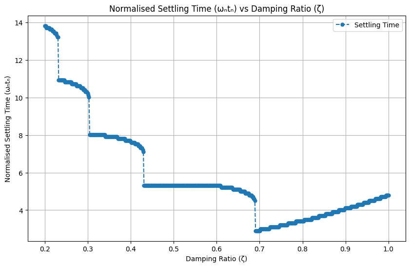

We will take second-order systems as exemplar. However, before diving into the design cycle, it’s crucial to understand that while real-world systems may not always be second-order, mastering the design for such systems is fundamental. This knowledge can be extended to more complex systems. We start with a standard second-order system in a unity-feedback configuration.
The System Description
Consider the transfer function \(G(s)\) in the forward path of a unity-feedback system:
and the closed-loop transfer function \(Y(s)/R(s)\) is given by:
\[
\frac{Y(s)}{R(s)} = \frac{\omega_n^2}{s^2 + 2\zeta\omega_n s + \omega_n^2}
\]
Where: - $ _n $ is the undamped natural frequency. - $ $ is the damping ratio.
Understanding the Damping Ratio (\(\zeta\))
Undamped System (\(\zeta = 0\)): Purely oscillatory behavior.
Under-Damped (\(0 < \zeta < 1\)): Oscillatory but decaying response.
Critically Damped (\(\zeta = 1\)): Fastest return to equilibrium without overshooting.
Over-Damped (\(\zeta > 1\)): Slow return to equilibrium without oscillations.
Characteristic Equation and Roots
The characteristic equation is:
\[
\Delta (s) = s^2 + 2\zeta\omega_n s + \omega_n^2
\]
The roots of this equation (closed-loop poles or characteristic roots) are critical for system behavior analysis.
The characteristic roots of a standard second-order system can be derived from its characteristic equation. For the system represented by the transfer function $ G(s) = $, the characteristic equation is obtained from the denominator of the closed-loop transfer function:
\[
\Delta s = s^2 + 2\zeta\omega_n s + \omega_n^2 = 0
\]
To find the roots of this characteristic equation, we solve for $ s $. These roots, which are also known as the poles of the system, dictate the system’s behavior.
Solving the quadratic equation $ s^2 + 2_n s + _n^2 = 0 $ using the quadratic formula, we get:
\[
s = \frac{-2\zeta\omega_n \pm \sqrt{(2\zeta\omega_n)^2 - 4\omega_n^2}}{2}
\]
Simplifying further:
\[
s = \frac{-2\zeta\omega_n \pm \sqrt{4\zeta^2\omega_n^2 - 4\omega_n^2}}{2}
\]
\[
s = \frac{-2\zeta\omega_n \pm \sqrt{4\omega_n^2(\zeta^2 - 1)}}{2}
\]
\[
s = \frac{-2\zeta\omega_n \pm 2\omega_n\sqrt{\zeta^2 - 1}}{2}
\]
\[
s = -\zeta\omega_n \pm \omega_n\sqrt{\zeta^2 - 1}
\]
So, the characteristic roots (or poles) are:
\[
s = -\zeta\omega_n \pm \omega_n\sqrt{\zeta^2 - 1}
\]
Depending on the value of $ $ (the damping ratio), these roots can be real or complex:
For $ < 1 $ (under-damped): The roots are complex conjugates.
\[ s = -\zeta\omega_n \pm j\omega_n\sqrt{1 - \zeta^2} \]
For $ = 1 $ (critically damped): The roots are real and identical.
\[ s = -\omega_n \]
For $ > 1 $ (over-damped): The roots are distinct real numbers.
These roots are crucial for understanding the system’s transient response, stability, and overall behavior.
Characteristic Roots Visualization
For $ = 0 $ (under-damped):
\[ s = \pm j\omega_n \]
For $ = 1 $ (critically damped): The roots are real and identical.
\[ s = -\omega_n \]
We can plot how the roots move in the s-plane.
Let’s use Python for this running the cell below
import numpy as npimport matplotlib.pyplot as plt# Set the undamped natural frequencyomega_n =1# You can adjust this as needed# Create a range of zeta values from 0 to 2zeta_values = np.linspace(0, 2, 400)# Prepare a plotplt.figure(figsize=(10, 8))for zeta in zeta_values:# Calculate the roots for each zetaif zeta <1:# Under-damped (Complex conjugate roots) roots = [-zeta * omega_n +1j* omega_n * np.sqrt(1- zeta**2),-zeta * omega_n -1j* omega_n * np.sqrt(1- zeta**2)] color ='blue'elif zeta ==1:# Critically damped (Repeated real roots) roots = [-zeta * omega_n, -zeta * omega_n] color ='green'else:# Over-damped (Distinct real roots) roots = [-zeta * omega_n + omega_n * np.sqrt(zeta**2-1),-zeta * omega_n - omega_n * np.sqrt(zeta**2-1)] color ='red'# Plot the roots plt.plot([root.real for root in roots], [root.imag for root in roots], 'o', color=color)# Annotating key pointsplt.annotate('Undamped\n(Complex Roots)', xy=(0, omega_n), xytext=(0.5, omega_n+0.5), arrowprops=dict(facecolor='black', shrink=0.05))plt.annotate('Critically Damped\n(Repeated Real Roots)', xy=(-omega_n, 0), xytext=(-2, 0.5), arrowprops=dict(facecolor='black', shrink=0.05))plt.annotate('Over-Damped\n(Distinct Real Roots)', xy=(-2*omega_n, 0), xytext=(-2.5, -0.5), arrowprops=dict(facecolor='black', shrink=0.05))# Setting plot featuresplt.title('Root Locus as Damping Ratio (zeta) Varies')plt.xlabel('Real Part')plt.ylabel('Imaginary Part')plt.axhline(y=0, color='k') # x-axisplt.axvline(x=0, color='k') # y-axisplt.grid(True)plt.xlim(-2.5, 0.5)plt.ylim(-1.5, 1.5)# Show the plotplt.show()
The quantity \(\zeta\omega_n\) has a very important role: it is the real part of the complex conjugate pair.
Determining the Damping Angle (\(\theta\))
Given the geometry of the root locus diagram above we can determine the angle \(\theta\) (hint: the radius of the circle is \(\omega_n\)):
The angle \(\theta\) is called the damping angle because it is a function of \(\zeta\) only (and does not depend on \(\omega_n\).
The line of constant \(\theta\) (and hence constant \(\zeta\)) is called damping line. Given a specific \(\zeta\) the roots will lie along the associated damping line.
Given specific \(\theta\), \(\omega_n\) the closed loop poles, the roots of the characteristic equation are:
or: \[ s = -\zeta\omega_n \pm j\omega_n\sqrt{1 - \zeta^2} \]
This means that given specific \(\theta\), \(\omega_n\) we can translate these values into closed loop poles.
The design criteria will hence be to force the closed loop poles to the desired location, where we obtain the performance that we want (i.e., satisfy the transient response specification).
SIDEBAR - Relationship between \(\zeta\), \(\omega_n\), and Closed-Loop Poles
Relationship between \(\zeta\), \(\omega_n\), and Closed-Loop Poles:
In a standard second-order system, the parameters \(\zeta\) (damping ratio) and \(\omega_n\) (undamped natural frequency) are key determinants of the system’s behavior.
The values of \(\zeta\) and \(\omega_n\) directly define the position of the closed-loop poles in the complex plane. For instance, a change in \(\zeta\) and \(\omega_n\) will move these poles, affecting the system’s transient response.
Equivalence of Specifying \(\zeta\), \(\omega_n\), and Closed-Loop Poles:
When you specify \(\zeta\) and \(\omega_n\) for a second-order system, it’s equivalent to specifying the desired locations of the closed-loop poles. This is because there’s a direct, calculable relationship between these parameters and the poles.
The closed-loop poles, in turn, determine key performance characteristics of the system, like overshoot, settling time, and oscillation frequency.
Importance in Root Locus Design:
This understanding forms the basis of root locus design, a method used to determine the stability of a control system and design controllers.
In root locus design, you typically start with a desired transient response (defined by \(\zeta\) and \(\omega_n\)) and then adjust the controller to move the system’s poles to these predefined locations in the complex plane.
Translating \(\zeta\) and \(\omega_n\) into Closed-Loop Pole Locations:
By specifying \(\zeta\) and \(\omega_n\), you essentially set a target for where you want the closed-loop poles to be. The design task then becomes a matter of modifying the system (often through a controller) so that its actual poles align with these target locations.
Achieving this alignment ensures that the system’s transient response meets the specified performance criteria.
In the context of a standard second-order system, specifying \(\zeta\) and \(\omega_n\) is a way of defining desired performance characteristics. The root locus method then uses these specifications to design a control system that places the closed-loop poles in positions that ensure these performance characteristics are met. This is a fundamental approach in control system design, allowing engineers to tailor systems to meet specific transient response requirements.
Transient Response Characteristics
Let’s now analyzing the response of an under-damped system to a unit-step input:
\[
R(s) = \frac{1}{s}
\]
In this case, the output is:
\[
Y(s) = \frac{\omega_n^2}{s(s^2 + 2\zeta\omega_n s + \omega_n^2)}
\]
The response function, obtained as the inverse Laplace transform, is:
\[
y(t) = 1 - \frac{e^{-\zeta\omega_nt}}{\sqrt{1-\zeta^2}}\sin(\omega_d t + \theta)
\]
Where: - $ _d = _n $ is the damped frequency. - \(\theta = \cos^{-1}(\zeta)\) is the damping angle.
In this case, the poles are complex conjugate.
import numpy as npimport matplotlib.pyplot as plt# Define the parameterszeta =0.3# Damping ratioomega_n =1.0# Natural frequency (rad/s)t = np.linspace(0, 10, 1000) # Time vector# Calculate the angular frequency and phase angleomega_d = omega_n * np.sqrt(1- zeta**2)theta = np.arctan2(omega_n * np.sqrt(1- zeta**2), zeta)# Compute the system responsey =1- (np.exp(-zeta * omega_n * t) / np.sqrt(1- zeta**2)) * np.sin(omega_d * t + theta)# Compute the upper and lower envelope curvesupper_envelope =1+ (np.exp(-zeta * omega_n * t) / np.sqrt(1- zeta**2))lower_envelope =1- (np.exp(-zeta * omega_n * t) / np.sqrt(1- zeta**2))# Plot the response and envelope curvesplt.figure(figsize=(8, 6))plt.plot(t, y, label='System Response')plt.plot(t, upper_envelope, 'r--', label='Upper Envelope')plt.plot(t, lower_envelope, 'g--', label='Lower Envelope')plt.xlabel('Time (s)')plt.ylabel('y(t)')plt.title('Second-Order System Response with Envelopes')plt.grid(True)plt.legend()plt.show()
Envelope Curves and Time Constant
The response is bounded by envelope curves:
Upper Envelope: $ 1 + $
Lower Envelope: $ 1 - $
These curves play a significant role: the faster they decay, the faster the decay of the response.
The time constant of the envelope is (hint: it is an exponential function): \[ \tau = \frac{1}{\zeta\omega_n} \]
The response is:
\[
y(t) = 1 - \frac{e^{-\zeta\omega_nt}}{\sqrt{1-\zeta^2}}\sin(\omega_d t + \theta)
\]
but it is more convenient to plot the response with respect to the normalised time \(\omega_n t\). Now we only have \(\zeta\) as parameter:
Note that:
for \(\zeta=1\) the system is critically damped, just about without oscillations.
for \(\zeta>1\) the system is over-damped and becomes sluggish. This is typically not desirable in a control system.
Understanding the Design Trade-offs
A lower $ $ (more oscillatory) leads to a shorter rise time but higher overshoot.
A higher $ $ (less oscillatory) reduces overshoot but increases rise time.
Key Transient Performance Indicators
Rise Time (\(t_r\)): Time taken for the response to first reach the final value.
Peak Time (\(t_p\)): Time to first peak of the response.
Maximum Overshoot (\(M_p\)): Maximum deviation from the final value.
Calculating \(t_r\), \(t_p\), and \(M_p\)
We start from
\[
y(t) = 1 - \frac{e^{-\zeta\omega_nt}}{\sqrt{1-\zeta^2}}\sin(\omega_d t + \theta)
\]
To determine the time to peak (\(t_p\)) for a standard second-order system, we need to analyze the system’s response and find when it reaches its first maximum. This occurs at a point of extremum in the response function, where the first derivative of the response with respect to time (\(t\)) equals zero.
Let’s break down the steps to find \(t_p\):
The Response Function:
For an under-damped second-order system (\(0 < \zeta < 1\)), the step response is given by: \[
y(t) = 1 - \frac{e^{-\zeta\omega_nt}}{\sqrt{1-\zeta^2}}\sin(\omega_d t + \theta)
\] where \(\omega_d = \omega_n\sqrt{1-\zeta^2}\) and \(\theta = \cos^{-1}(\zeta)\).
Finding the Extremum:
The extremum occurs where the derivative of \(y(t)\) with respect to \(t\) is zero. Let’s find this derivative:
\[
\frac{dy}{dt} = \zeta\omega_n \frac{e^{-\zeta\omega_nt}}{\sqrt{1-\zeta^2}}\sin(\omega_d t + \theta) - \omega_d \frac{e^{-\zeta\omega_nt}}{\sqrt{1-\zeta^2}}\cos(\omega_d t + \theta).
\]
Setting \(\frac{dy}{dt} = 0\) gives us the condition for the peak.
Simplifying the Equation:
The equation \(\frac{dy}{dt} = 0\) simplifies to: \[
\zeta\sin(\omega_d t + \theta) = \sqrt{1-\zeta^2}\cos(\omega_d t + \theta).
\]
Using the identity \(\sin(a + b) = \sin(a)\cos(b) + \cos(a)\sin(b)\), we get: \[
\zeta[\sin(\omega_d t)\cos(\theta) + \cos(\omega_d t)\sin(\theta)] = \sqrt{1-\zeta^2}\cos(\omega_d t).
\]
Since \(\theta = \cos^{-1}(\zeta)\), \(\sin(\theta) = \sqrt{1-\zeta^2}\) and \(\cos(\theta) = \zeta\). Substituting these into the equation, we simplify it to: \[
\zeta^2\sin(\omega_d t) + \sqrt{1-\zeta^2}\cos(\omega_d t)\sin(\omega_d t) = \zeta\cos(\omega_d t).
\]
Finding \(t_p\):
The equation simplifies to \(\sin(\omega_d t) = 0\), indicating that the peak occurs at a multiple of \(\pi/\omega_d\). The first peak (\(t_p\)) occurs at: \[
t_p = \frac{\pi}{\omega_d} = \frac{\pi}{\omega_n\sqrt{1-\zeta^2}}.
\]
This \(t_p\) is the time to peak for the under-damped second-order system’s step response. It’s important to note that this derivation assumes an under-damped system (\(0 < \zeta < 1\)). For critically damped (\(\zeta = 1\)) or over-damped (\(\zeta > 1\)) systems, the approach to finding \(t_p\) would be different, as the system response does not exhibit overshoot in these cases.
Note that the time to first undershoot would be \(\omega_d t = 2\pi\), the time to second overshoot \(\omega_d t = 3\pi\) and so on.
Maximum Overshoot (\(M_p\)):
To derive the maximum overshoot value (\(M_p\)) for an under-damped second-order system, we need to evaluate the system’s response at the time to peak (\(t_p\)), which we previously determined. The maximum overshoot is the amount by which the system’s response exceeds its final value (which is 1 for a unit step input) at the first peak.
Recall the Response Function:
The response for an under-damped system (\(0 < \zeta < 1\)) to a unit step input is:
\[
y(t) = 1 - \frac{e^{-\zeta\omega_nt}}{\sqrt{1-\zeta^2}}\sin(\omega_d t + \theta),
\]
where \(\omega_d = \omega_n\sqrt{1-\zeta^2}\) and \(\theta = \cos^{-1}(\zeta)\).
Evaluate the Response at \(t_p\):
We previously found that \(t_p = \frac{\pi}{\omega_d}\). Substituting this into the response function gives:
The sine term simplifies as \(\sin(\pi + \theta) = -\sin(\theta)\). Since \(\theta = \cos^{-1}(\zeta)\), we have \(\sin(\theta) = \sqrt{1-\zeta^2}\). Therefore:
This final expression gives the maximum overshoot \(M_p\) for an under-damped second-order system. It quantifies how much the first peak of the system’s response overshoots the steady-state value in response to a unit step input. The overshoot depends solely on the damping ratio \(\zeta\), and as \(\zeta\) approaches 1 (transition to critical damping), \(M_p\) decreases, reflecting less overshoot in the system’s response.
Pop-up Question: What happens to the peak time (\(t_p\)) as the damping ratio ($ $) increases?
Answer: As $ $ increases, $ _d = _n $ decreases, leading to an increase in peak time (\(t_p\)).
Transient Performance Specifications
Let’s continue our exploration of control engineering, focusing on transient performance specifications. Remember, we’re using a step response, typically a unit step response, as our primary tool for examining the transient response of second-order systems. And interestingly, these specifications apply to higher-order systems too.
Rise Time, Peak Overshoot, Time to Peak, and Settling Time
First, let’s recap the key specifications we’re discussing: - Rise Time (t_r): The time it takes for the system’s response to rise from 10% to 90% of its final value. - Peak Overshoot (M_p): The maximum peak value of the response curve as a percentage over the final value. - Time to Peak (t_p): The time taken to reach the first peak overshoot. - Settling Time (t_s): The time taken for the response to reach and stay within a certain percentage (commonly 2% or 5%) of its final value.
# Import necessary librariesimport numpy as npimport matplotlib.pyplot as pltimport controldef find_max_consecutive_index(arr): max_consecutive_index =None consecutive_start =Nonefor i inrange(len(arr) -1):if arr[i] +1!= arr[i +1]:if consecutive_start isnotNone: max_consecutive_index = consecutive_start consecutive_start =Noneelif consecutive_start isNone: consecutive_start = i +1# Check if the entire array is consecutiveif consecutive_start isnotNone: max_consecutive_index = consecutive_startreturn max_consecutive_index if max_consecutive_index isnotNoneelselen(arr) -1# Define a function to calculate and plot the system response with performance parametersdef plot_response(zeta, omega_n, sim_time):# System parameters: zeta (damping ratio), omega_n (natural frequency) num = [omega_n**2] # Numerator (assuming unit gain) den = [1, 2* zeta * omega_n, omega_n**2] # Denominator# Create a transfer function model system = control.tf(num, den)# Time parameters t = np.linspace(0, sim_time, int(sim_time*100)) # Time vector# Step response t, y = control.step_response(system, t) steady_state_value = y[-1]# Rise Time rise_time_indices = np.where(y >= steady_state_value)[0] rise_time = t[rise_time_indices[0]] if rise_time_indices.size elseNone# Peak Overshoot and Peak Time peak_overshoot = np.max(y) - steady_state_value peak_time = t[np.argmax(y)]# Settling Time (within 2% of steady-state value). This is found numerically. settling_time_indices = np.where(abs(y - steady_state_value) <=0.02* steady_state_value)[0] ts_index = find_max_consecutive_index(settling_time_indices) settling_time = t[settling_time_indices[ts_index]] if settling_time_indices.size elseNone# Plot plt.figure(figsize=(10, 6)) plt.plot(t, y, label='System Response') plt.axhline(steady_state_value, color='r', linestyle='--', label='Steady State')# tolerange band (0.02 percent) plt.axhline(steady_state_value *1.02, color='g', linestyle=':', label='Settling Time Bound') plt.axhline(steady_state_value *0.98, color='g', linestyle=':')if rise_time: plt.axvline(rise_time, color='y', linestyle='-', label=f'Rise Time: {rise_time:.2f}s') plt.axvline(peak_time, color='b', linestyle='-', label=f'Peak Time: {peak_time:.2f}s') plt.scatter(peak_time, np.max(y), color='black', label=f'Peak Overshoot: {peak_overshoot:.2f}')if settling_time: plt.scatter(settling_time, y[settling_time_indices[ts_index]], color='purple') plt.axvline(settling_time, color='purple', linestyle='-', label=f'Settling Time: {settling_time:.2f}s') plt.title('Transient Response with Performance Parameters') plt.xlabel('Time (seconds)') plt.ylabel('Output') plt.legend() plt.grid(True) plt.show()# Interactive slidersfrom ipywidgets import interact, FloatSliderinteract(plot_response, zeta=FloatSlider(value=0.3, min=0.01, max=1.0, step=0.01), omega_n=FloatSlider(value=2, min=1, max=10, step=0.1), sim_time=FloatSlider(value=10, min=1, max=50, step=1))
Notice that rise time depends on both $ $ and $ _n $, but the effect of $ $ is relatively small.
As we discussed, we would like the rise time to be as small as possible. This would mean that the system responds quickly.
To visualize how rise time varies with $ $ and $ _n $ and to demonstrate that the rise time remains relatively constant as $ $ changes, we can write a Python script using libraries like matplotlib for plotting and numpy for numerical computations.
In this script: - We define a range of $ $ values from 0.01 to 0.99. - We select a few values of $ _n $ to illustrate the effect on rise time. - We use the derived formula for rise time and plot it against $ $ for each $ _n $. - The plot will show multiple curves, each representing a different $ _n $, and how the rise time varies with $ $ for these values.
Running this code will generate a graph illustrating the relationship between rise time, damping ratio $ $, and natural frequency $ _n $. The graph will demonstrate that while the rise time varies with different $ _n $ values, the effect of $ $ on rise time is relatively small, especially within a typical range of $ $.
import numpy as npimport matplotlib.pyplot as plt# Define a range of zeta and omega_n valueszeta_values = np.linspace(0.01, 0.99, 100) # Zeta values from 0.01 to 0.99omega_n_values = np.array([1, 2, 5, 10]) # Different omega_n values# Function to calculate rise timedef rise_time(zeta, omega_n):return (np.pi - np.arccos(zeta)) / (omega_n * np.sqrt(1- zeta**2))def normalised_rise_time(zeta):return (np.pi - np.arccos(zeta)) / (np.sqrt(1- zeta**2))# Plottingplt.figure(figsize=(10, 6))for omega_n in omega_n_values: rt = rise_time(zeta_values, omega_n) plt.plot(zeta_values, rt, label=f'ωₙ = {omega_n}')wnrt = normalised_rise_time(zeta_values)plt.plot(zeta_values, wnrt, label=f'ωₙtₙ')# Add vertical lines at zeta = 0.4 and zeta = 0.7plt.axvline(x=0.4, color='gray', linestyle='--', linewidth=1.5, label='ζ = 0.4')plt.axvline(x=0.7, color='gray', linestyle='--', linewidth=1.5, label='ζ = 0.7')plt.title('Rise Time vs Damping Ratio (ζ) for Different ωₙ')plt.xlabel('Damping Ratio (ζ)')plt.ylabel('Rise Time')plt.legend()plt.grid(True)plt.show()
Here, $ M_p $ depends solely on the damping ratio $ $.
We would like the rise time \(t_r\) to be as short as possible, but also that the peak overshoot remains small. A high peak overshoot means that the system is close to instability and even small variations of parameters might make the system unstable.
Typically, $ M_p $ is acceptable when stays between \(5\% - 40\%\). A value less than \(5\%\) is also acceptable but typically this means that the rise time will be very high.
This means that typically: \(0.4 < \zeta < 0.7\). With reference to the previous figure, in this range, \(\omega_n t_r\) (the normalised rise time) is practically constant and not affected too much by the change in the damping ratio.
If this is true we can then say that the rise time is the inverse of the undamped natural frequency:
To optimize the performance of a control system, particularly its speed of response, we often aim to decrease the rise time. The rise time, which indicates how quickly a system responds to changes, is inversely related to the system’s natural frequency, $ _n $. Therefore, to reduce the rise time, a common strategy is to design the system such that $ _n $ is as large as possible.
However, this approach comes with a significant caveat. Increasing $ _n $ also increases the system’s bandwidth. Bandwidth, in simple terms, is the range of frequencies over which the system can effectively operate. A higher bandwidth means that the system becomes more sensitive to a wider range of frequencies, including those in the higher range.
The challenge with a large bandwidth is that it allows high-frequency signals, which are often noise, to penetrate the system. These high-frequency signals can adversely affect the system’s performance. In contrast, the useful signals in most control systems are typically of lower frequency. Thus, while a large bandwidth might improve the speed of response, it can compromise the system’s ability to filter out unwanted noise.
Therefore, when designing for optimal rise time, one must consider the trade-off between speed of response and noise immunity. The goal is not to achieve the smallest theoretical rise time, but to find a practical balance that ensures the system’s reliability and stability. This balance is largely influenced by the bandwidth limitations.
The relationship between the speed of response (as measured by the rise time) and the system’s bandwidth is almost direct: a faster response (lower rise time) corresponds to a wider bandwidth. However, an infinite bandwidth is impractical, as it would lead to excessive noise interference. Consequently, a zero rise time, which would require infinite bandwidth, is unachievable.
The appropriate balance between rise time and bandwidth is highly dependent on the specific components and characteristics of the system. For instance, if the system employs sensors that do not generate high-frequency noise, it may be feasible to design for a higher bandwidth (and thus a lower rise time) without significantly compromising the system’s performance. Each system requires a tailored approach, considering its unique hardware and operational environment.
Stability considerations
In the context of control systems, particularly those modeled as second-order systems, the stability and response characteristics are significantly influenced by two parameters: the damping ratio ($ \() and the natural frequency (\) _n $). The damping ratio $ $ plays a pivotal role in governing the system’s oscillatory behavior and its ability to reach equilibrium. A higher $ $ results in less oscillation and a more overdamped system, which stabilizes quicker but may have a slower response. Conversely, a lower $ $ leads to a more underdamped system, characterized by more pronounced oscillations, and can risk instability if it becomes too low.
The natural frequency $ _n $, representing the system’s intrinsic oscillation rate in the absence of damping, affects the speed of the system’s response. A higher $ _n $ typically allows for faster response times but, coupled with a low damping ratio, can induce rapid oscillations, edging the system towards instability.
Crucially, the peak overshoot ($ M_p $) is intimately linked with these parameters. $ M_p $, defined as the maximum peak of the response curve as a percentage over the final value, is directly influenced by $ $. Specifically, $ M_p = e^{-} $ illustrates that a higher damping ratio reduces the peak overshoot, moving the system away from instability. This relationship highlights the delicate balance required in control system design: ensuring responsiveness and minimizing overshoot while maintaining stability. Therefore, the selection of $ $ and $ _n $ must be made with a keen understanding of their impact on both the transient response (rise time, overshoot) and the overall stability of the system.
For example, a \(100\%\) overshoot means that the poles are on the \(j\omega\) axis and hence the system is marginally stable.
Qualitatively, for second-order systems: - \(\zeta\) is indicative of stability. - \(\omega_n\) is indicative of the speed of response.
In other words, the stability of a control system depends by two key parameters: the damping ratio $ $ and the natural frequency $ _n $.
damping ratio $ $: The damping ratio $ $ primarily dictates the system’s ability to mitigate oscillations and return to equilibrium.
A higher $ $ generally indicates a more damped system, which tends to stabilize more quickly but may respond slower to changes.
In contrast, a lower $ $ leads to a less damped system that can exhibit more oscillatory behavior, potentially approaching instability if it’s too low.
**natural frequency $ _n $**: The natural frequency $ _n $, on the other hand, is indicative of the system’s inherent tendency to oscillate at a particular rate in the absence of damping.
A higher $ _n $ can contribute to a quicker response time, but when combined with a low damping ratio, it can make the system prone to rapid and potentially unstable oscillations.
The interplay between $ $ and $ _n $ is therefore important: while a higher $ _n $ can enhance system responsiveness, it must be balanced with an appropriate $ $ to ensure the system remains stable and does not oscillate excessively. This balance is key in control system design, ensuring that systems are both responsive and stable.
To calculate the peak overshoot (\(M_p\)) for $ = 0.4 $ and $ = 0.7 $ in Python, we can use the numpy library for numerical calculations.
The cell below defines a function peak_overshoot which takes a damping ratio $ $ and computes the peak overshoot using the given formula. The function is then used to calculate the peak overshoot for $ = 0.4 $ and $ = 0.7 $. The results are printed in both decimal and percentage forms.
Here’s the Python code to do this:
import numpy as np# Function to calculate peak overshootdef peak_overshoot(zeta):return np.exp(-np.pi * zeta / np.sqrt(1- zeta**2))# Calculate peak overshoot for zeta = 0.4 and zeta = 0.7mp_04 = peak_overshoot(0.4)mp_07 = peak_overshoot(0.7)print(f"Peak Overshoot for ζ = 0.4: {mp_04:.4f} or {mp_04 *100:.2f}%")print(f"Peak Overshoot for ζ = 0.7: {mp_07:.4f} or {mp_07 *100:.2f}%")
Peak Overshoot for ζ = 0.4: 0.2538 or 25.38%
Peak Overshoot for ζ = 0.7: 0.0460 or 4.60%
Peak time (\(t_p\))
The peak time \(t_p\) is similar to the rise term in terms of qualitative behaviour.
The relationship between the peak time (\(t_p\))) and the natural frequency (\(\omega_n\))) is also important to understand. The peak time is defined as the time it takes for the system response to reach its first maximum peak. From the theoretical background provided, the peak time is given by the formula:
This equation illustrates that the peak time is inversely proportional to the natural frequency (\(\omega_n\)) of the system, while also being influenced by the damping ratio \(\zeta\)). Specifically, as \(\omega_n\) increases, the peak time \(t_p\) decreases, implying that the system reaches its peak response more quickly. This relationship highlights that a system with a higher natural frequency will respond faster, reaching its peak in a shorter amount of time.
The presence of \(\sqrt{1 - \zeta^2}\)) in the denominator also indicates the influence of the damping ratio \(\zeta\)) on the peak time. However, the dominant factor in determining \(t_p\) is \(\omega_n\), as the damping ratio’s impact is moderated by the square root and the subtraction from unity.
In practical terms, designing a control system with a higher natural frequency \(\omega_n\) can be beneficial for achieving quicker responses. However, this must be carefully balanced with considerations for the system’s stability and overshoot, as influenced by both \(\omega_n\) and \(\zeta\). The peak time thus serves as an essential indicator in the design and analysis of control systems, particularly when quick responses are desirable, but not at the expense of system stability and performance.
Settling Time (\(t_s\))
Calculating an analytical expression for the settling time in control systems, particularly for higher-order or complex systems, presents several challenges.
Settling time is defined as the duration after which the system’s response remains within a specified tolerance band around the steady-state value and does not exit this band thereafter.
For second-order systems, this can often be approximated with standard formulas, especially when systems are underdamped. However, for systems that exhibit more complex behavior, such as those with higher-order dynamics, non-linearities, or varying parameters, deriving an exact analytical expression becomes considerably more complicated.
One of the key difficulties lies in the system’s response characteristics, which can vary significantly based on factors like damping ratio ($ \(), natural frequency (\) _n $), and the presence of non-linear elements or external disturbances. The response might exhibit oscillations, overshoots, or varying rates of decay, which are not straightforward to encapsulate in a single formula. Additionally, the criteria for ‘settling’ within a tolerance band are not always clear-cut in practical scenarios, where noise and external factors can cause the response to fluctuate around the desired value.
As a result, numerical methods and simulations become essential tools for accurately determining the settling time. They allow for the detailed modeling of system behavior under various conditions, capturing nuances that analytical methods may miss. The following Python code exemplifies this numerical approach, illustrating how the settling time varies with the damping ratio ($ $) in a second-order system. This numerical analysis provides a more flexible and practical means to understand and predict system behavior in real-world scenarios.
Settling Time vs. Damping Ratio
In control systems, the relationship between the settling time and the damping ratio (\(\zeta\)) can be effectively illustrated through a graph.
This graph is particularly insightful as it reveals the non-linear nature of how the settling time varies with different values of \(\zeta\).
Specifically, it highlights a notable characteristic where the settling time experiences a sharp increase at certain values of \(\zeta\).
This increase is not linear or gradual but occurs at specific points, reflecting the complex dynamics of how damping affects the time it takes for a system to stabilize within its desired operational parameters. Such a graphical representation is crucial for understanding and designing control systems, especially in fine-tuning damping ratios to achieve optimal performance.
import numpy as npimport matplotlib.pyplot as plt# Time arrayt = np.linspace(0, 10, 1000) # Extended time range for more clarity# System parameterszeta_values = [1, 0.9, 0.7, 0.55, 0.43]omega_n =1# Natural frequency# Function for second-order system unit-step responsedef unit_step_response(t, zeta, omega_n):if zeta <1: # Underdamped omega_d = omega_n * np.sqrt(1- zeta**2)return1- np.exp(-zeta * omega_n * t) * (np.cos(omega_d * t) + (zeta/np.sqrt(1-zeta**2)) * np.sin(omega_d * t))elif zeta ==1: # Critically dampedreturn1- np.exp(-omega_n * t) * (1+ omega_n * t)# Compute settling timedef compute_settling_time(t, response, tolerance=0.05): upper_bound =1+ tolerance lower_bound =1- tolerancefor i inrange(len(response)):ifall(response[j] < upper_bound and response[j] > lower_bound for j inrange(i, len(response))):return t[i]return np.nan# Storing settling timessettling_times = []# Plotting responses for different zeta valuesplt.figure(figsize=(10, 6))for zeta in zeta_values: y = unit_step_response(t, zeta, omega_n) settling_time = compute_settling_time(t, y) settling_times.append(settling_time) plt.plot(t, y, label=f'ζ = {zeta}')# Annotate settling timeifnot np.isnan(settling_time): plt.axvline(x=settling_time, color='gray', linestyle='--', alpha=0.7) settling_point = y[np.argmin(np.abs(t - settling_time))] plt.plot(settling_time, settling_point, 'ro') # Mark the settling point plt.text(settling_time, settling_point, f' ({settling_time:.2f}s)', verticalalignment='bottom')#plt.text(settling_time, settling_point, f' ({settling_time:.2f}, {settling_point:.2f})', verticalalignment='bottom')# Unit value and tolerance bandplt.plot(t, np.ones_like(t), 'k--', label='Unit Value')plt.fill_between(t, 0.95, 1.05, color='yellow', alpha=0.3, label='5% Tolerance Band')plt.title('Unit-Step Response of a Second-Order System')plt.xlabel('Time')plt.ylabel('Response')plt.legend()plt.grid(True)plt.show()# Plotting Settling Time vs Zetaplt.figure(figsize=(10, 6))plt.plot(zeta_values, settling_times, 'o:', label='Settling Time', markersize=12)plt.title('Normalised Settling Time (ωₙtₙ) vs Damping Ratio (ζ)')plt.xlabel('Damping Ratio (ζ)')plt.ylabel('Normalised Settling Time (ωₙtₙ)')plt.grid(True)plt.legend()plt.show()
The plot shows the typical response of a second-order system to settle to its final value within a \(5\%\) tolerance band (hence between values 0.95-1.05). The plot also shows the response of the system for a critically damped system (\(\zeta=1\)).
We can define a better curve varying \(\zeta\):
# Time arrayt = np.linspace(0, 100, 1000) # Extended time range for more clarity and lower damping ratioszeta_values = np.linspace(0.2, 1, 500) settling_times =[]for zeta in zeta_values: y = unit_step_response(t, zeta, omega_n) settling_time = compute_settling_time(t, y) settling_times.append(settling_time)# Plotting Settling Time vs Zetaplt.figure(figsize=(10, 6))plt.plot(zeta_values, settling_times, 'o--', label='Settling Time', markersize=5)plt.title('Normalised Settling Time (ωₙtₙ) vs Damping Ratio (ζ)')plt.xlabel('Damping Ratio (ζ)')plt.ylabel('Normalised Settling Time (ωₙtₙ)')plt.grid(True)plt.legend()plt.show()

Approximating the Settling Time
Approximating the settling time of a control system using the envelope of its response is a practical approach, especially in the case of underdamped systems where the response exhibits oscillatory behavior. The envelope provides a clear visual representation of the maximum extent of the system’s response over time, which is particularly useful for identifying when the system’s output stabilizes within a specified tolerance band.
This will make it possible to have an approximation of the part where \(0 < \zeta < 0.7\) in the above plot. Remember that typical values for the damping ratio will be in this range. The behaviour for values of \(\zeta>0.7\) is different.
The standard form of the response of an underdamped second-order system can be expressed as:
This envelope captures the oscillatory nature of the system’s response and its exponential decay.
To approximate the settling time, you can set the envelope equal to the tolerance level and solve for time $ t $. For instance, for a 5% tolerance level, the equation becomes:
Note that \(\ln(0.05\sqrt{1-\zeta^2}) \in [-3, -3.3]\), for \(0 < \zeta < 0.7\) (which is what we are analysing).
We can obtain a further approximation as:
\[
t_s = \frac{3}{\omega_n\zeta}
\]
Let’s write Python code that plots this envelope for a range of \(\zeta\) values and indicates the associated settling time within a 5% tolerance band. The settling time can be estimated by finding the point at which the envelope first enters the tolerance band and doesn’t exit afterward.
import numpy as npimport matplotlib.pyplot as plt# Time arrayt = np.linspace(0, 10, 1000) # Time range for plotting# System parameterszeta_values = [0.9, 0.7, 0.55, 0.43] # zeta values - to highlight the difference use [0.2, 0.5, 0.7] omega_n =1# Natural frequencycolors = ['red', 'blue', 'green', 'purple'] # Colors for each zeta value# Plottingplt.figure(figsize=(10, 6))for zeta, color inzip(zeta_values, colors): envelope_upper =1+ np.exp(-zeta * omega_n * t) / np.sqrt(1- zeta**2) envelope_lower =1- np.exp(-zeta * omega_n * t) / np.sqrt(1- zeta**2)# Plot envelope plt.plot(t, envelope_upper, color=color, linestyle='--', alpha=0.5) plt.plot(t, envelope_lower, color=color, linestyle='--', alpha=0.5, label=f'ζ = {zeta}')# Settling time estimation settling_time =-np.log(0.05* np.sqrt(1- zeta**2)) / (zeta * omega_n) plt.axvline(x=settling_time, color=color, linestyle='-', alpha=0.7) plt.text(settling_time, 1.1, f'{settling_time:.2f}', rotation=90, verticalalignment='bottom', color=color)plt.title('Envelope and Settling Time for Underdamped Systems')plt.xlabel('Time')plt.ylabel('Response')plt.legend()plt.grid(True)plt.show()
Settling Time within a 2% Tolerance Band
In control system specifications, a 2% tolerance band is commonly utilized. Through detailed computer simulations, it has been observed that the critical damping ratio for achieving a 2% tolerance band is \(\zeta = 0.76\). The behavior of the normalized settling time (\(\omega_n t_s\)) relative to \(\zeta\) in this scenario exhibits a notable pattern:
When \(\zeta\) ranges from 1 to 0.76, the normalized settling time decreases.
As \(\zeta\) decreases from 0.76 to 0, the normalized settling time increases.
The challenge in obtaining an analytical expression for the settling time within a 2% tolerance band, as before, lies in its complex non-linear nature. However, an approximation can be made as follows:
Here, the logarithmic term \(\ln(0.02 \sqrt{1-\zeta^2})\) varies between -3.9 to -4.34 for \(\zeta\) values within the range of 0 to 0.76, reaching its minimum at \(\zeta=0.76\). Rewriting this expression, we get:
In this context, it’s important to note that \(\zeta \omega_n\) is the reciprocal of the time constant of the envelope curve. Therefore, for a 2% tolerance band, the settling time can be approximated using the time constant of the system’s envelope:
\[ t_s = \frac{4}{\zeta \omega_n} \] (i.e., four times the time constant)
This approximation effectively utilizes the time constant of the envelope curve, simplifying the calculation of the settling time within the specified tolerance band.
This is the expression for the settling time that we will use most of the time.
Understanding Steady-State Error
Steady-state error is a key metric in control systems that quantifies the difference between the desired output (the setpoint) and the actual output of the system as time approaches infinity. In simpler terms, it measures how close the system’s output can get to the desired value after transients have died out.
Steady-State Error for Different Inputs
The nature of the steady-state error varies significantly based on the type of input signal the system is responding to.
Typically, three standard types of inputs are considered: step, ramp, and parabolic. When designing a controller for steady state, it is typically important to understand the system behaivour for all these inputs.
The steady-state error for each type of input highlights the system’s ability to track different kinds of signals:
1. Step Input
For a step input (a sudden change in the desired output), a well-designed second-order system will often have a steady-state error of zero. This is because the system can adjust its output to match the new setpoint after some time.
This is clear looking at the unit-step response for \(t \rightarrow \infty\):
A ramp input (a continuously increasing or decreasing setpoint) introduces a new challenge. The steady-state error for a ramp input is generally non-zero for a standard second-order system. It indicates the system’s inability to keep up with the continuously changing setpoint. The steady-state error in response to a ramp input can be calculated using the final value theorem from Laplace transform theory.
\[
y(t) = t - \frac{2\zeta}{\omega_n} + \frac{e^{-\zeta\omega_nt}}{\omega_n\sqrt{1-\zeta^2}}\sin(\omega_dt+2\theta)
\]
where \(\theta = \cos^{-1}\zeta\) and \(\omega_d = \omega_n\sqrt{1-\zeta^2}\)
To create a Python sketch of the response to a ramp input, we’ll use the provided response formulas.
The code below plots both the response of the system to a ramp input and the ramp input itself. The ramp_response function computes the system’s response using the given formula. The plot will illustrate how the system’s output behaves over time in response to a linearly increasing input. The parameters \(\zeta\) and \(\omega_n\) can be adjusted to see how different system characteristics affect the response.
import numpy as npimport matplotlib.pyplot as plt# Time arrayt = np.linspace(0, 10, 500)# System parameterszeta =0.3# Example damping ratioomega_n =2# Example natural frequency# Calculate omega_s and thetaomega_s = omega_n * np.sqrt(1- zeta**2)theta = np.arccos(zeta) # np.arctan(np.sqrt(1 - zeta**2) / zeta)# Response to ramp inputdef ramp_response(t, zeta, omega_n, omega_s, theta):return t - (2* zeta / omega_n) + (np.exp(-zeta * omega_n * t) / (omega_n * np.sqrt(1- zeta**2))) * np.sin(omega_s * t +2* theta)# Ramp inputramp_input = t# Calculating responseresponse = ramp_response(t, zeta, omega_n, omega_s, theta)# Plottingplt.figure(figsize=(10, 6))plt.plot(t, response, label='System Response to Ramp Input')plt.plot(t, ramp_input, label='Ramp Input', linestyle='--')plt.title('Response to a Ramp Input')plt.xlabel('Time')plt.ylabel('Response')plt.legend()plt.grid(True)plt.show()
Comments
Note that from a transient perspective, there are no new behaviours. There is oscillations that we captured already analysing the unit-step response. This is the reason why we do not need to analyse the transient to multiple inputs.
If however we look at the steady state, we now have a steady state error.
Given: \[
y(t) = t - \frac{2\zeta}{\omega_n} + \frac{e^{-\zeta\omega_nt}}{\omega_n\sqrt{1-\zeta^2}}\sin(\omega_dt+2\theta)
\]
when \(t \rightarrow \infty\):
\[
y_{ss} = t - \frac{2\zeta}{\omega_n}
\]
The output follow the ramp input but with a \(\frac{2\zeta}{\omega_n}\) steady state error.
The steady state error can formally be calculated as:
\[
e_{ss} = r - y_{ss} = t - \big(t - \frac{2\zeta}{\omega_n}\big) = \frac{2\zeta}{\omega_n}
\]
Analytical Calculation
Analytically, the steady-state error can be determined using the final value theorem of Laplace transforms.
In this case, we are not interested in the transient behaviour which we analyse only through the response to the unit-step input.
The theorem states that the steady-state value of a function can be found by taking the limit as \(s\) (the Laplace variable) approaches zero of \(s\) times the Laplace transform of the function.
For example, the steady-state error for a ramp input can be calculated by applying the final value theorem to the error signal \(E(s)\), which is the difference between the input signal \(R(s)\) and the output signal \(Y(s)\). This involves evaluating the limit:
\[ e_{ss} = \lim_{s \to 0} sE(s) \]
where \(E(s) = R(s) - Y(s)\).
For our system:
\[
\frac{E(s)}{R(s)} = \frac{1}{1+G(s)}
\]
From which:
\[
E(s) = \frac{R(s)}{1+G(s)}
\]
Applying the final value theorem:
\[ e_{ss} = \lim_{s \to 0} s \frac{R(s)}{1+G(s)} \]
Remember the conditions for applycability of the final value theorem: \(sE(s)\) has no poles on the imaginary axis or in the RHP.
\[
E(s) = \frac{(s+2\zeta\omega_n)}{s(s^2 +2\zeta\omega_n s + \omega_n^2)}
\]
\[
sE(s) = \frac{(s+2\zeta\omega_n)}{(s^2 +2\zeta\omega_n s + \omega_n^2)}
\]
This transfer function has no poles on the imaginary axis or in the right half plane and we can apply the Final Value Theorem. This is important to check!
and finally:
\[ e_{ss} = \lim_{s \to 0} s E(s) = \frac{2\zeta}{\omega_n}\]
3. Parabolic Input:
The parabolic input represents an even more challenging scenario, typically resulting in an infinite steady-state error for a standard second-order system. This reflects the system’s inability to track a signal that changes at an accelerating rate.
Applying the same reasoning: \[
R(s) = \frac{1}{s^3}
\]
and
\[
sE(s) = \frac{(s+2\zeta\omega_n)}{s(s^2 +2\zeta\omega_n s + \omega_n^2)}
\]
We cannot apply the Final Value Theorem because we have one pole on the imaginary axis.
To understand the steady state error we can analyse:
\[
E(s) = \frac{(s+2\zeta\omega_n)}{s^2(s^2 +2\zeta\omega_n s + \omega_n^2)}
\]
invert this expression to obtain \(e(t)\) for \(t\rightarrow \infty\). This function has two poles at the origin, which means that we can interpret this as an unstable system, i.e., the error grows unbounded.
The standard second-order system in feedback loop is not able to follow a parabolic input. It means that this system might need to be limited to cases where inputs are steps and ramps only. Alternatively we need a suitable controller.
To sum up we can re-run the same code we had in notebook 18_Performance_of_Feedback_Systems. The unbounded growth of the steady state error for the parabolic input is clearly visible.
import numpy as npimport matplotlib.pyplot as pltimport control# Define system parameters (modify as needed for your example)Kp =1.0# Proportional gainomega_n =1.0# Natural frequencyzeta =0.5# Damping rationum = [Kp * omega_n**2]den = [1, 2* zeta * omega_n, omega_n**2]# Create transfer functionG = control.tf(num, den)# Time vectort = np.linspace(0, 20, 1000)# Unit Step Inputt_step, y_step = control.step_response(G, t)e_step =1- y_step # Steady-state error for step input# Unit Ramp Inputt_ramp, y_ramp = control.forced_response(G, t, t)e_ramp = t - y_ramp # Steady-state error for ramp input# Unit Parabola Inputt_parabola, y_parabola = control.forced_response(G, t, t**2/2)e_parabola = t**2/2- y_parabola # Steady-state error for parabola input# Plottingplt.figure(figsize=(15, 5))plt.subplot(1, 3, 1)plt.plot(t_step, y_step, label='Response')plt.plot(t_step, np.ones_like(t_step), 'r--', label='Step Input')plt.plot(t_step, e_step, 'g:', label='Error')plt.title('Response to Unit Step Input')plt.xlabel('Time')plt.ylabel('Output')plt.legend()plt.subplot(1, 3, 2)plt.plot(t_ramp, y_ramp, label='Response')plt.plot(t_ramp, t_ramp, 'r--', label='Ramp Input')plt.plot(t_ramp, e_ramp, 'g:', label='Error')plt.title('Response to Unit Ramp Input')plt.xlabel('Time')plt.ylabel('Output')plt.legend()plt.subplot(1, 3, 3)plt.plot(t_parabola, y_parabola, label='Response')plt.plot(t_parabola, t_parabola**2/2, 'r--', label='Parabola Input')plt.plot(t_parabola, e_parabola, 'g:', label='Error')plt.title('Response to Unit Parabola Input')plt.xlabel('Time')plt.ylabel('Output')plt.legend()plt.tight_layout()plt.show()
Practical Implications
In practical terms, understanding and calculating the steady-state error is crucial for system design and tuning. It helps in setting realistic performance expectations and in choosing the right type of controller or compensator to minimize the error for the given type of input. For instance, in systems where following a ramp input is important, designers might opt for different controller settings or add integral action to reduce the steady-state error.
In summary, the steady-state error is a vital aspect of control system performance, offering insight into how well a system can maintain its output at or near a desired level in response to various types of inputs. Analyzing and minimizing this error is a key part of control system design and optimization.
Exercise and Questions
Now, let’s reinforce these concepts with some exercises: 1. Compute Peak Overshoot: Given a damping ratio of 0.5, calculate the peak overshoot $ M_p $. 2. Steady-State Error for a Ramp Input: For a system with $ = 0.3 $ and $ _n = 4 $, find the steady-state error for a ramp input. 3. Effect of Bandwidth on Stability: Discuss how increasing the bandwidth affects the system’s stability and its ability to reject noise.


Comments
Note that from a transient perspective, there are no new behaviours. There is oscillations that we captured already analysing the unit-step response. This is the reason why we do not need to analyse the transient to multiple inputs.
If however we look at the steady state, we now have a steady state error.
Given: \[ y(t) = t - \frac{2\zeta}{\omega_n} + \frac{e^{-\zeta\omega_nt}}{\omega_n\sqrt{1-\zeta^2}}\sin(\omega_dt+2\theta) \]
when \(t \rightarrow \infty\):
\[ y_{ss} = t - \frac{2\zeta}{\omega_n} \]
The output follow the ramp input but with a \(\frac{2\zeta}{\omega_n}\) steady state error.
The steady state error can formally be calculated as:
\[ e_{ss} = r - y_{ss} = t - \big(t - \frac{2\zeta}{\omega_n}\big) = \frac{2\zeta}{\omega_n} \]